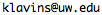

Interested candidates should contact Prof. Eric Klavins at .
More information about the Klavins lab can be found at klavinslab.org.
None available at this time.
Undergrads can get involved in synthetic biology research through DAWGMA - a new team of undergraduate students doing independent research on synthetic biology, advised and mentored by the Klavins lab.
The Klavins lab is regularly screens candidates with expertise in the following: protein engineering, RNASeq, FlowSeq, synthetic biology, machine learning, and software engineering. Candidates with experience with both laboratory methods and information technology are of particular (and almost exclusive) interest. Note that the lab is no longer taking candidates wanting to study robotics.
The Klavins lab is always seeking highly motivated, independent graduate students in computer engineering, bioengineering, and biology for a variety of projects ranging from building gene networks that compute to developing an automated research laboratory. We accept students in many departments, including EE, CSE, BIOEN, MolES, and Biology. Positions, as always, are subject to funding decisions that are usually beyond our control.